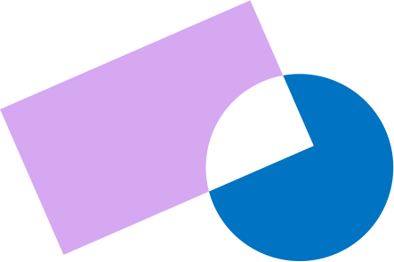

Aprender começa na relação.
Acompanhamos cada criança com presença, cuidado e respeito pelo seu ritmo.
No Pré-escolar da CRIAR, criamos as bases para uma aprendizagem vivida com segurança emocional, curiosidade e confiança.
É neste tempo inicial que a relação, o corpo, o brincar e a descoberta ganham centralidade, respeitando o ritmo de cada criança e a sua forma única de estar no mundo.
Acreditamos que aprender começa muito antes dos conteúdos formais: começa na forma como a criança é vista, escutada e acompanhada todos os dias.

Como se vive o Pré-escolar na CRIAR
O dia-a-dia organiza-se com intenção, equilíbrio e presença.
Relação e segurança emocional
Cada criança é acompanhada de forma próxima e consistente, num ambiente onde se sente segura para explorar, errar e crescer.
Natureza como contexto de aprendizagem
O exterior faz parte do quotidiano. O contacto com a terra, a horta e o espaço ao ar livre integra a rotina e amplia a experiência.
Estrutura e rotina com intencionalidade
O dia organiza-se com equilíbrio entre previsibilidade e descoberta. A rotina integra experiências artísticas, corporais e criativas que enriquecem o percurso de cada criança.
Inglês integrado na vivência
O inglês está presente de forma natural na rotina diária, através da relação e da experiência.
Brincar como motor do desenvolvimento
A brincadeira é o espaço onde a criança constrói pensamento, linguagem, regulação emocional e relação com o outro.
O que faz parte do nosso dia-a-dia
Ao longo da semana, diferentes experiências estruturam o crescimento das crianças, combinando organização, enriquecimento e acompanhamento atento.
- Organização pedagógica
- Grupos heterogéneos
- Trabalho em pequeno e grande grupo
- Momentos de escolha individual
- Diário de turma e conselho semanal
- Desenvolvimento emocional e autorregulação
- Momentos de pausa
- Oficina das emoções
- Espaços de escuta e acompanhamento
- Expressão e criatividade
- Artes, movimento e música
- Horta e culinária
- Projetos a partir dos interesses das crianças
- Corpo e natureza
- Tempo diário no exterior
- Manhã semanal fora da escola
- Horta e contacto com a terra
- Acompanhamento especializado
- Oficina dos sons (5 anos)
- Oficina das emoções
- Acompanhamento psicológico integrado na escola
O Pré-escolar como primeira etapa de um percurso coerente
O que vivemos no Pré-escolar não é isolado, faz parte de um projeto educativo mais amplo, que acompanha cada criança ao longo do seu crescimento.
A relação, o rigor com humanidade e a aprendizagem com sentido são princípios transversais a toda a escola.
Palavras de quem faz parte da CRIAR
Experiências vividas no dia-a-dia da escola.
Dúvidas? Temos as respostas.
Horário flexível: das 8h às 18h
A alimentação é integralmente fornecida pela escola, incluindo a refeição ligeira da manhã, o almoço e o lanche da tarde. Todas as refeições são preparadas diariamente na nossa cozinha, utilizando alimentos maioritariamente biológicos, respeitando a sazonalidade e excluindo produtos processados.
As crianças não precisam de estar desfraldadas quando entram na nossa escola. O desfralde é feito em parceria entre a escola e a família quando a criança demonstrar que está pronta para o desfralde.
Não há idade para deixar de dormir a sesta. A criança dorme a sesta enquanto precisar de descansar.
No pré-escolar o inglês está integrado na rotina e o professor está em sala uma média de 3h semanais. O professor além de integrar a rotina falando só em inglês, conta histórias, canta músicas e faz jogos com as crianças.
A adaptação é pensada de forma gradual e personalizada. Respeitamos o ritmo de cada criança e articulamos este processo com a família, ajustando tempos e estratégias sempre que necessário.
O objetivo é que a criança se sinta segura, confiante e verdadeiramente acolhida desde os primeiros dias.
Sempre que identificamos alguma necessidade, articulamos a equipa pedagógica com a equipa terapêutica da escola. O acompanhamento pode incluir observação em contexto, reuniões de articulação e, quando necessário, avaliações ou sessões individuais.
Trabalhamos em proximidade com as famílias para garantir um apoio coerente, contínuo e respeitador da individualidade de cada criança.
A transição é construída de forma progressiva, ao longo do último ano de Pré-escolar. Trabalhamos competências de autonomia, autorregulação, linguagem e consciência fonológica, sempre através da experiência e do brincar.
Mais do que antecipar conteúdos formais, procuramos garantir que cada criança chega ao 1.º ciclo com segurança emocional, curiosidade e gosto por aprender.
Quer conhecer a CRIAR com mais calma?
Estamos disponíveis para conversar ou receber a sua visita.